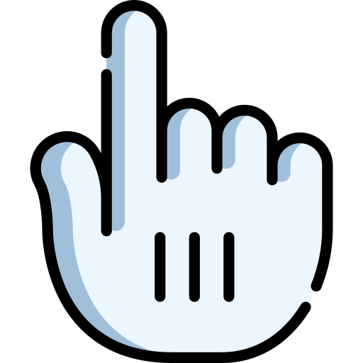

Equipe Team Two
Olá! Somos a Team Two, uma equipe de robótica formada pelos estudantes de Sistemas de Informação: Samuel Chaves, Jamily Grazielle, Franciele Alves e Kaillane Corrêa, orientados pela professora Salete Farias e com parceria do laboratório MARAMAKER, coordenado pela professora Priscila Lima.
A Team Two é uma equipe de robótica que vem construindo uma trajetória de destaque em competições e eventos da área. Agora, temos a honra de anunciar que fomos classificados para o FIRA Mundial, que acontecerá em agosto, na cidade de Daegu, na Coreia do Sul, uma das maiores competições internacionais de robótica avançada!
Nós sabemos que alcançar esse objetivo não será nada fácil, precisamos montar o robô, pagar a inscrição na competição e custear a viagem, então estamos pedindo a sua doação para que possamos ficar mais perto desse sonho.
Sua contribuição não será apenas uma ajuda financeira, mas sim um investimento em jovens talentos, na educação tecnológica e no futuro da robótica brasileira.
Conheça um pouco da nossa trajetória em menos de 1 ano de existência:
🏆 1º lugar - FIRA Estadual 2024


 Assista ao vídeo do evento
Assista ao vídeo do evento
Em agosto de 2024, tivemos nossa estreia em competições oficiais e conseguimos alcançar o topo do pódio no FIRA, o maior evento de robótica do Brasil, garantindo na etapa estadual o 1º lugar na modalidade Labirinto Autônomo com muito empenho e dedicação.
🎟️ FIRA Nacional 2024

 Veja a postagem do
evento
Veja a postagem do
evento
No FIRA Nacional 2024, em novembro, conseguimos o 4º lugar na modalidade Futebol de Robôs e garantimos nossa vaga para representar o Brasil no FIRA Mundial na Coreia do Sul. Uma conquista que nos enche de orgulho e responsabilidade.
🎟️ FIRA Mundial 2025


Atualmente, estamos arrecadando recursos para participação do FIRA Mundial que acontecerá de 11 a 15 de agosto, em Daegu - Coreia do Sul, já recebemos a carta convite e já estamos cadastrados para participar da modalidade Carro Autônomo, onde um robô em formato de carro deve percorrer uma estrada totalmente sozinho
🎟️ Universo IF 2024 - Primeira Edição

 Assista ao vídeo do evento
Assista ao vídeo do evento
Em outubro de 2024, participamos do Universo IF, um evento com objetivo de proporcionar um espaço de divulgação e promoção do conhecimento científico, nele houve a Liga Nacional de Robótica, a maior competição da Rede Federal de Ensimo(IF), alcançamos 4º lugar na modalidade Desafio de entrega e fomos credenciados para participar da Roboparty 2025 em Portugal para levar nossa energia e conhecimento ainda mais longe!
🏆 3º lugar - Roboparty em Portugal


 Assista ao vídeo do evento
Assista ao vídeo do evento
Em março de 2025, tivemos a oportunidade de representar o Brasil na 17ª edição da RoboParty, realizada em Guimarães, Portugal, um evento educativo de 3 dias em que equipes constroem e programam robôs móveis com apoio técnico, participando também de atividades lúdicas, em um ambiente imersivo e pedagógico. Participamos da modalidade Robot Show, uma espécie de dança de robôs em grupo, formando a equipe Ocean Bots em parceria com duas equipes portuguesas. Juntos, conquistamos o primeiro pódio brasileiro na história do evento: um honroso 3º lugar entre as equipes internacionais.
🏆 2º lugar - FIRA Estadual 2025


Em maio de 2025, participamos da etapa estadual do FIRA 2025 na modalidade Carro Autônomo, onde mostramos a nossa consistência no desenvolvimento e na programação de veículos inteligentes, enfrentando desafios de navegação autônoma com precisão e estratégia. Nosso desempenho garantiu o 2º lugar, destacando nossa equipe entre as melhores do estado e reforçando nosso compromisso com a inovação e excelência em robótica.
📚 Projetos Educativos


Realizamos oficinas de robótica voltadas para crianças da Ilha de São Luís, com o objetivo de despertar o interesse pela tecnologia desde cedo. Durante essas atividades, promovemos a aprendizagem prática e divertida, utilizando kits de robótica e dinâmicas interativas que estimulam o raciocínio lógico, a criatividade e o trabalho em equipe.
Também participamos de eventos educacionais e tecnológicos, levando a robótica de forma inclusiva e transformadora a diferentes públicos. Acreditamos que democratizar o acesso ao conhecimento tecnológico é um passo essencial para construir um futuro mais justo e inovador.
📲 Acompanhe a gente no Instagram:
 @t2_maker
@labmaramaker.mtc
@t2_maker
@labmaramaker.mtc
